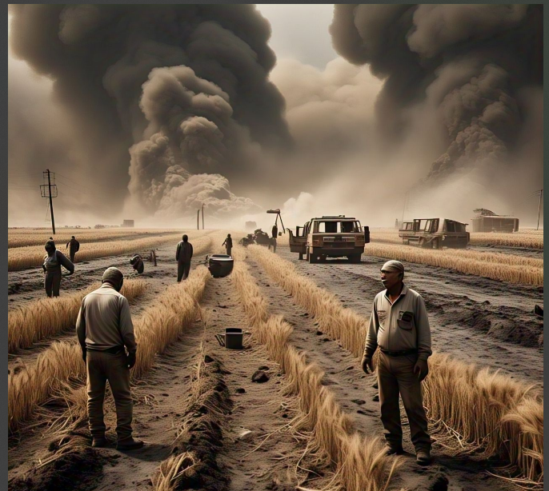

नगरा। सरयां बगडोरा गांव में सोमवार दोपहर अचानक लगी आग ने कई किसानों की मेहनत पर पानी फेर दिया। अज्ञात कारणों से लगी इस आग में छह से अधिक किसानों की लगभग पांच बीघे में खड़ी गेहूं की फसल जलकर राख हो गई। आग लगने की सूचना मिलते ही गांव में हड़कंप मच गया, लेकिन समय रहते फायर ब्रिगेड नहीं पहुंच पाने के कारण किसानों को भारी नुकसान झेलना पड़ा।
प्रत्यक्षदर्शियों के अनुसार, दोपहर के समय किसान अपने खेतों में काम कर रहे थे, तभी अचानक एक खेत में आग की लपटें उठने लगीं। देखते ही देखते आग ने तेज रफ्तार पकड़ ली और आसपास के खेतों में फैल गई। आग ने धनीराम, मिनहाज अंसारी, अशोक सिंह, राम प्रसाद, श्रीकिशुन राजभर,
चंद्रमा और धनुषधारी के गेहूं के खेतों को अपनी चपेट में ले लिया। जब तक किसान कुछ समझ पाते, आग विकराल रूप ले चुकी थी और तेज हवा के कारण आग तेजी से फैलती चली गई।
आग की लपटें देख खेतों में मौजूद किसानों और ग्रामीणों ने शोर मचाना शुरू कर दिया। आस-पास के लोग बाल्टी और मोटर पंप की मदद से आग बुझाने की कोशिश करने लगे। आग लगने की सूचना तुरंत पुलिस और फायर ब्रिगेड को दी गई, लेकिन मौके पर सिर्फ 112 की पुलिस टीम पहुंची। फायर ब्रिगेड समय पर नहीं पहुंच सकी, जिससे किसानों को भारी नुकसान उठाना पड़ा। ग्रामीणों ने अथक प्रयास कर आग को बुझाया, लेकिन तब तक खेतों में खड़ी पूरी फसल जलकर राख हो चुकी थी।
इस आग में जिन किसानों की फसल जली है, वे पूरी तरह से बर्बाद हो गए हैं। किसानों का कहना है कि फसल कटाई के लिए लगभग तैयार थी, लेकिन आग ने उनकी सारी मेहनत मिट्टी में मिला दी। ग्रामीणों ने प्रशासन से मांग की है कि प्रभावित किसानों को उचित मुआवजा दिया जाए, ताकि उनकी आर्थिक स्थिति संभल सके।
स्थानीय लोगों का कहना है कि अगर फायर ब्रिगेड समय पर पहुंच जाती, तो शायद नुकसान को कम किया जा सकता था। हर साल खेतों में आग लगने की घटनाएं सामने आती हैं, लेकिन प्रशासन की लापरवाही के कारण किसानों को हमेशा नुकसान झेलना पड़ता है। प्रशासन को चाहिए कि वह ऐसी घटनाओं को रोकने के लिए उचित कदम उठाए, ताकि भविष्य में किसानों को इस तरह की आपदा से बचाया जा सके।